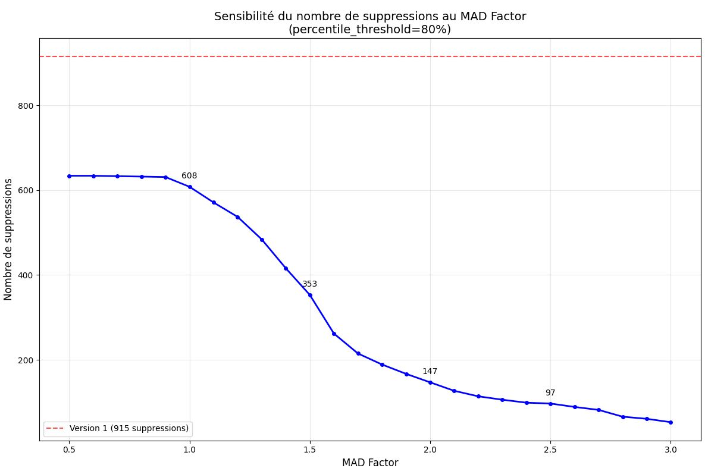

Toutes les données présentes sur ce site sont extraites de Légifrance, la base de données officielle du droit français.
Les listes publiées officiellement contiennent les CESP (Contrats d'Engagement de Service Public), ce qui fausse la distribution réelle des rangs par spécialité.
Pour corriger cette distorsion, l'idéal aurait été d'avoir accès aux rangs spécifiquement concernés par les CESP. Cependant, cette information n'est pas disponible en ligne. Seul le nombre de postes ouverts (Annexe II) pour les CESP par ville et spécialité est accessible sur Légifrance.
Pour pallier cette limitation, nous avons développé 3 modes de traitement du dataset :
Les listes sont utilisées telles quelles, sans aucun traitement.
Dans ce mode, pour chaque spécialité comptant x postes CESP, nous supprimons ce nombre de postes en partant du bas du classement.
C'est comme le mode Sans CESP mais plus léger, car on enlève que les valeurs aberrantes statistiquement parlant.
Supprimer toutes les valeurs comme en mode "Sans CESP" n'est pas forcément juste, notamment pour des spécialités comme médecine générale où le nombre de CESP est très important. Il est probable que des CESP soient présents dans des rangs intermédiaires et pas uniquement en queue de distribution. Le mode ajusté est là pour pallier ce problème.
Nous avons essayé de repérer les valeurs aberrantes dans le dataset, avec différentes méthodes (Z-score, MAD...). On repère un drop dans la distribution des derniers rangs. L'objectif est de supprimer uniquement pour les spécialités à CESP des rangs aberrants.
J'ai donc décidé de prendre un score MAD au point d'inflexion bas. Partant du principe que ce point correspond au moment où on supprime les valeurs de queue, mais qu'on n'a pas commencé à toucher au gros de la distribution elle-même.
La méthode SAFE/sans CESP est vraiment une méthode trop conservatrice mais étant donné qu'on parle d'un concours c'est la plus sur. La méthode ajusté devrait bien palier au problème des CESP, et au moins préserver une 'justesse statistique' en tout cas c'est le but.